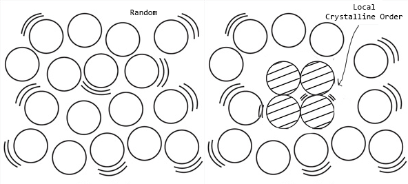

Solidification
Any phase change is feasible if and only if there is a driving force, here, it is the decrease in free energy that drives the phase transformation. Let us consider a typical liquid to solid phase transformation. When a liquid is cooled below its equilibrium melting temperature $ \mathrm{(T_m)} $, there is a driving force for solidification $ \mathrm{(G_S - G_L)} $, and thus one expects the liquid phase to solidify spontaneously. In practice, however, this is not the case, as many liquid metal melts can be significantly cooled below the equilibrium melting point (undercooling).
What is undercooling?
Since at $ \mathrm{(T_m)} $ both phases are in equilibrum, we have,
Where $ \mathrm{\Delta T} $ is the degree of undercooling, which is the difference between the equilibrium temperature of solidification and the temperature at which solidification begins spontaneously.
Why does this happen?
Nucleation
The first stage of solidification is nucleation. Nucleation refers to the formation of the smallest particle (nuclei) of a new phase that is stable in an existing phase. Moreover, nucleation can be either homogeneous or heterogeneous. Let us consider homogeneous nucleation first.
Homogeneous Nucleation
Also known as self nucleation, this type of nucleation happens in perfectly homogeneous materials (devoid of impurities) like pure liquid metals. Here, nucleation is equiprobable throughout the bulk of the parent phase i.e., it can occur simultaneously at many points in the metal melt.
Returning to our original case of a liquid to solid transformation with an undercooling of $ \mathrm{\Delta T} $, consider the formation of a small spherical crystal with radius $ \mathrm{r} $ from the melt. The formation of these nuclei will result in,
- Generation of new volumes (of nuclei), accompanied by a decrease in bulk $ (\text{liquid} - \text{solid}) $ free energy.
- Generation of new surfaces/interfaces (of nuclei), accompanied by an increase in interface energy.
The above figure shows a possible plot of eq. \ref{eq:2}, wherein the formation of small solid particles always increases free energy because the interfacial term increases as $ \mathrm{r^2} $, whereas the volume free energy released only increases as $ \mathrm{r^3}$. Furthermore, it demonstrates that for a given undercooling, there is a radius, $ \mathrm{r^\ast} $, corresponding to the maximum free energy.
Unstable nuclei with radius $ \mathrm{r} < \mathrm{r^\ast} $ are known as embryos while stable nuclei with radius $ \mathrm{r} > \mathrm{r^\ast} $ are referred to as supercritical nuclei; $ \mathrm{r^\ast} $ is known as the critical nucleus radius, and can be derived by differentiating eq. \ref{eq:2},
When $ \mathrm{r} < \mathrm{r^\ast} $, it can be seen that the system is not in a minimum free energy state. Moreover, the growth of the nuclei will result in a further increase in free energy and is thus not possible. Hence, the system will be driven to the minimum free energy state by the dissolution of the nuclei. Applying the same principle when $ \mathrm{r} > \mathrm{r^\ast} $, the free energy of the system can be decreased by the growth of the nuclei.
How does a nucleus form?
Statistical Nature of Atoms
A nucleus is a cluster of atoms with similar orientations or a group of atoms in a crystalline arrangement. To form a nucleus, loosely packed atoms of the liquid must come together in a crystalline order at a given instant of time.
Now due to the statistical nature of atoms (random, but with a certain probability), within the liquid, there can exist many small close-packed clusters of atoms that are temporarily in crystalline order. Because this process is random, the probability of finding a large cluster is lower than that of a smaller cluster.
As a result, at smaller undercooling (i.e., closer to the melting point, where the value of $ \mathrm{r^\ast} $ is large), the probability of forming supercritical nuclei is lower, as is the probability of solidification (because at least one nucleus must grow to cause solidification). Solidification is thus more likely at larger undercooling, where the $ \mathrm{r^\ast} $ is smaller.
Heterogeneous Nucleation
Conclusion
Recall eq. \ref{eq:1} i.e., $ \Delta G_V = \frac{\Delta H_V \Delta T}{T_m} $. Now, at $ \mathrm{T} = \mathrm{T_m} $, $ \mathrm{\Delta G_V} = 0 $ and therefore, it follows from eq. \ref{eq:3}, that $ \mathrm{r^\ast} = \infty $.
That is, for solidification to start and continue unaided, a nuclei of size $ \infty $ must form, which is quite impossible. In other words, in a homogeneous melt, spontaneous solidification at the melting point (i.e., zero undercooling) is not feasible. It can also be stated that while there is a fixed melting point, there is no fixed freezing point.
As a result, either the solid must be undercooled so that stable nuclei can form, or external nucleation sites must be provided. The latter is a case of heterogeneous nucleation.